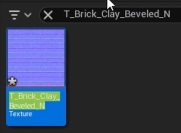
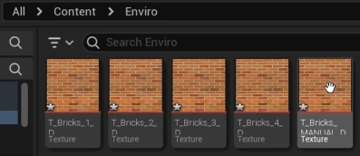
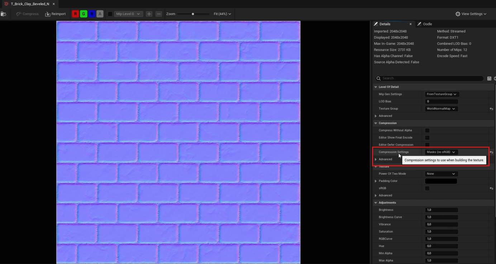
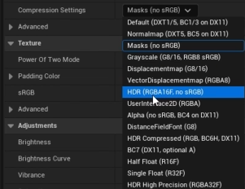

Visual variety is a valid purpose
The first pass favored exact software evidence too heavily. This expansion adds 13 Karol course captures across seven slide treatments, plus two linked stock-photo options. An image can establish context, provide a memorable object, invite a question, or give the audience a pause between dense explanations.
Suggested rhythm: section image → concise concept → code with a control/object crop → large result → discussion. Use one dominant image, not a row of tiny screenshots. As an editorial target, break up runs of more than two dense text/code slides when a useful image is available; this is not a universal slide-design rule.
Highest-impact first: slide 20 normal map; slide 11 Outliner selection; slide 27 Blender viewport; slides 4/13 Python entry point; slide 17 texture thumbnails. Then add the image-led UI/UX and peer-test dividers.
Keep runnable code readable. A borrowed capture can sit beside the code as an example without pretending it is the exact checkpoint result. Put the lesson credit in a small footer and fuller provenance in notes.
Original ten candidate sets · New asset provenance
KAROL CAPTURES · SLIDE 4Show the Python entry point
Current slide

Composition: Use the Python-mode selector as a large visual beside three short setup steps. The Output Log frame can follow the first run.
Read aloudWhere would you type Python, and where would you inspect the response?
Source context: The setting capture shows Python startup configuration, not the plugin enable checkbox.
Why add it: introduces a recognizable object, control or outcome into a run of text and code. The image also provides a place to point while speaking.
KAROL CAPTURES · SLIDE 11Put a selected object beside the selection code
Current slide

Composition: Keep the short runnable code on the left; place the selected Outliner crop on the right. Highlight the word selected in narration.
Read aloudPredict how the selected rows relate to the returned Actor list.
Source context: Karol’s selection is an example, not the output of our checkpoint or our cube fixture.
Why add it: introduces a recognizable object, control or outcome into a run of text and code. The image also provides a place to point while speaking.
KAROL CAPTURES · SLIDE 17Make asset selection tangible
Current slide

Visual candidates

12 Texture Compression Settings Validator - Accessing Editor Properties · 181×133 · Full image
13 Importance of PropertyAccessChangeNotifyMode in setting editor properties · 397×172 · Full imageComposition: Use the texture thumbnails as a wide strip beneath the code. Carry one thumbnail into slide 18 beside the expected path.
Read aloudThese thumbnails represent assets. How is selecting one different from selecting an Actor in the level?
Source context: The two captures are separate texture examples. Do not imply they show the same selection.
Why add it: introduces a recognizable object, control or outcome into a run of text and code. The image also provides a place to point while speaking.
KAROL CAPTURES · SLIDE 20Lead texture properties with the texture itself
Current slide

Visual candidates

12 Texture Compression Settings Validator - Accessing Editor Properties · 1384×739 · Full image
12 Texture Compression Settings Validator - Accessing Editor Properties · 301×232 · Full imageComposition: Give the purple normal map roughly two thirds of slide 20. Use the compression dropdown as a close-up on slide 21 or 22. Keep the current code independently readable.
Read aloudFind the setting in the editor before we read it through Python. What value would you expect for this normal map?
Source context: The dropdown is from a deliberate mismatch exercise; do not teach the highlighted value as the recommended setting.
Why add it: introduces a recognizable object, control or outcome into a run of text and code. The image also provides a place to point while speaking.
KAROL CAPTURES · SLIDE 25Give paths a recognizable location
Current slide

Composition: Pair a disk-path example with the real Explorer strip. Put the Unreal asset path beside a Content Browser thumbnail from the previous group.
Read aloudA file on disk and an Unreal asset path name different things. Which one does the import task need as its source?
Source context: Different lesson folders; preserve original names. Do not describe them as the classroom machine.
Why add it: introduces a recognizable object, control or outcome into a run of text and code. The image also provides a place to point while speaking.
KAROL CAPTURES · SLIDE 27Use a large Blender object at the transition
Current slide

Composition: Replace most of the divider’s empty area with the Blender viewport. Retain the section color in a narrow title band. Keep the actual bridge sequence on slide 29.
Read aloudWe are changing hosts. The object is still geometry, but Blender gives us a different API for working with it.
Source context: Course example geometry, not the prop used in our bridge demonstration.
Why add it: introduces a recognizable object, control or outcome into a run of text and code. The image also provides a place to point while speaking.
KAROL CAPTURES · SLIDE 56Use a colorful material outcome
Current slide

Composition: Open the material section with the material preview large; move the detailed calls to the following code slide or reveal them second.
Read aloudA parameter is useful because it changes what the artist sees. Which visible property would you expose for this task?
Source context: These are course examples; do not claim a matched before/after without checking the complete lesson sequence.
Why add it: introduces a recognizable object, control or outcome into a run of text and code. The image also provides a place to point while speaking.
STOCK OPTION · SLIDE 35Desktop work context

Use a large workspace photograph on the UI/UX section opener, with the title in the established purple band. The photo establishes the working context; it does not need to teach a particular control.
Mateusz Dach / Pexels · Pexels license
Source page and license verified. Linked candidate only; the image file was not acquired or visually inspected here. Local download of the collaboration image returned HTTP 403. No claim that these are the class or the instructor’s workspace.
Collaboration and peer review

Use a wide collaboration photo on the peer-testing divider, then switch to a concise task card for instructions. The image signals a change from listening to working together.
Startup Stock Photos / Pexels · Pexels license
Source page and license verified. Linked candidate only; the image file was not acquired or visually inspected here. Local download of the collaboration image returned HTTP 403. No claim that these are the class or the instructor’s workspace.